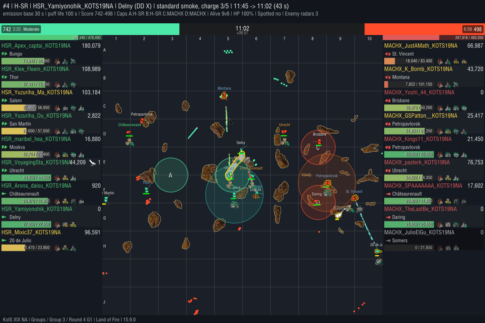
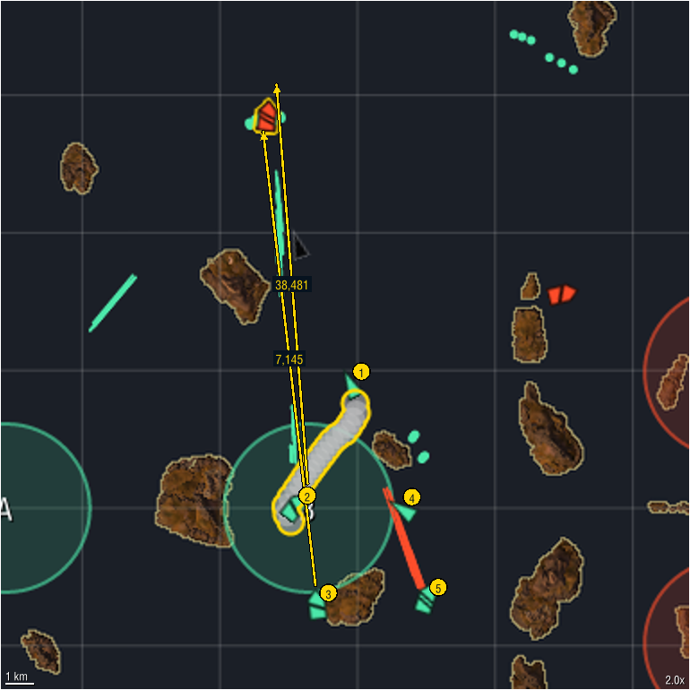

H-SR HSR_Yamiyonohik_KOTS19NA Delny
Land of Fire | MACHX vs H-SR | Groups Group 3 Round 4 | Game 1 | activated 11:45 (8:15 elapsed, mid), captured 11:02 | standard smoke RU_DD_DELNY
45,626 smoke damage, 1 kill 44,716 concealed, 910 detected


Clip available on request.
Classification auto-tagged: rule-based from the replay; fuzzy tags carry a confidence; hover a value for the numbers
| Smoker | Destroyer, standard smoke |
| Movement | Pushing |
| Coverage | Stacked |
| Purpose | |
| Location | zone center; center lane; nearest cap B is a center cap |
| Front line | behind the midpoint between the fleets |
| Caps in range | A, B, C, D |
Confidence: high medium low rule-based
Deployment
| Duration | 144 s |
| Allies in smoke at capture | HSR_VoyagingSta_KOTS19NA |
| Selfish smoke | no |
| Hand tags | untagged |
Objectives
| Distance to contested cap | 77% of the way into contested cap B (cap radius 3.0 km), contested because it sits on the midline between the spawns |
| Cap outcome | no cap changed hands |
| Denial signal | 0.0 enemy ships in or near cap B in the minute before, 0.0 while the smoke stood |
| Score at capture | 742 : 498 (swing +9) |
| Our radar from the smoke | none |
| Radar cap coverage | no concealed radar ship inside |
Violence
| Smoke damage | 45,626 |
| Concealed vs detected | concealed 44,716detected 910 |
| Detected shooters were spotted by | radar 910 |
| By where the shooter sat | fired from inside 32,289fired from outside, hidden by it 13,337 |
| By kind | shells 37,129, fires they started 8,497 |
| DD damage | 0 |
| Kills from smoke | 1 |
Shooters credited are in the Smokees table below.
Enemy ships damaged from the smoke
| Ship | Player | Concealed | Detected | Total | Sunk |
|---|---|---|---|---|---|
| Montana | MACHX_K_Bomb_KOTS19NA | 44,716 | 910 | 45,626 | yes |
The bad news
| Radar spots on us | 1 (0 damage taken while spotted): HSR_VoyagingSta_KOTS19NA at 10:14 by MACHX_Yoshi_44_KOTS19NA |
| Smoke deaths | none |
Smokees the smoker, every ally the smoke covered (inside it, firing undetected from behind it, or with it in their line of fire) and every credited shooter; numbers match the zoomed view
| Ship | Player | Role | Undetected | Detected by (time) | Damage dealt concealed / detected | Damage taken while covered | Kills | |
|---|---|---|---|---|---|---|---|---|
| 1 | Delny | HSR_Yamiyonohik_KOTS19NA | smoker | 100% | - | 0 / 0 | 0 | 0 |
| 2 | Utrecht | HSR_VoyagingSta_KOTS19NA | inside | 60% | surface lit 31 s, radar 24 s | 37,571 / 910 | 6,732 | 1 |
| 3 | Moskva | HSR_maribel_hea_KOTS19NA | behind | 100% | - | 7,145 / 0 | 0 | 0 |
| 4 | Châteaurenault | HSR_Arona_daisu_KOTS19NA | inside | 95% | radar 2 s | 0 / 0 | 0 | 0 |
| 5 | Bungo | HSR_Apex_captai_KOTS19NA | line of fire | - | smoke fire penalty, surface lit | 0 / 0 | 0 | 0 |